🚀 Google Antigravity ハンズオンガイド
2026年3月7日
はじめに
登壇者 自己紹介
新卒よりBtoBクラウドのインフラ/サーバーエンジニア → Web サービス開発 → 現在は生成AI活用の企画・推進を担当
- GitHub Copilot 導入で全社利用率 60% に向上
- 社内生成AIコミュニティを 200名 → 2,000名以上 に成長（1年）
- 学生向けハッカソン PM（年間800名規模・2年間）
- 社内外技術勉強会の企画・運営（延べ1,000名以上）
- Qiita 2019年 年間ランキング Top20「Git チートシート」記事が多くのエンジニアに活用される
- 京都市内の私立高校で生成AI活用講義・ワークショップ実施（20名対象）
- 京都市内の大学でハッカソン授業の講師を担当
- 学生向けハッカソン Open Hack U 2020 〜 Hack U 2024 企画・運営 メンター（学生向け大規模ハッカソン）
- SOZOコラボ 公式アンバサダーとして生成AIコミュニティでハンズオン・イベント運営
- コミュニティ運営勉強会でのLT登壇（複数回、知識共有とコミュニティ育成に貢献）
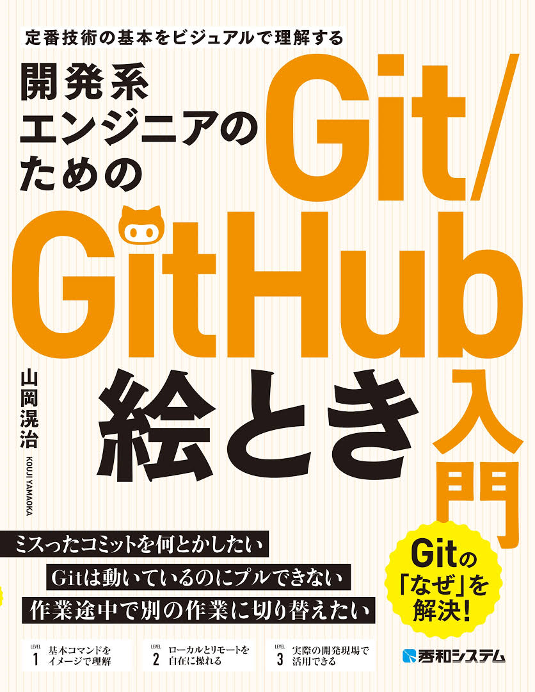
👨🏫 小中学生向けプログラミングスクール講師（副業） | 🎓 アクティブ・ブック・ダイアローグ®︎ 認定ファシリテーター
このガイドでは、Google Antigravity を使った開発の基礎から応用まで、ステップバイステップで学習できます。プログラミング初心者でも、AIがすべてサポートしてくれるので安心してください。
学習の流れ（所要時間 約110分）
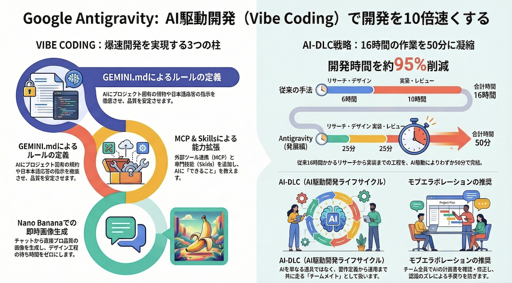
環境セットアップ & GEMINI.md
Antigravity の起動・設定と、AIへのルール定義ファイルの作成
Vibe Coding 基礎編
自然言語でWebページを作成し、Nano Banana で画像生成も体験
MCP 接続 & Agent Skills
外部ツール連携（MCP）と、AIへの「技能追加」（Skills）を体験
Vibe Coding 発展編
MCP × Skills を組み合わせて、本格的な Web アプリを作成
AI-DLC 戦略
ハッカソンで勝つための AI 駆動開発ライフサイクル戦略
Step 1-1: 環境セットアップ
🕐 19:30〜19:45（Step1 合計 15分）目標
Google Antigravity を起動して、ワークスペースの基本設定まで済ませましょう。
システム要件
| OS | 要件 |
|---|---|
| macOS | バージョン 12 (Monterey) 以上 ※ Apple Silicon のみ。X86 は非対応 |
| Windows | Windows 10 (64-bit) 以上 |
| Linux | glibc >= 2.28, glibcxx >= 3.4.25（Ubuntu 20, Debian 10 等） |
📚 公式ドキュメント: https://antigravity.google/docs/get-started
チェックリスト
1. Antigravity のインストール確認
- Antigravity アプリケーションがインストールされている
- Google アカウントでログイン済み
- アプリが最新版（Restart to Update が出ていたら再起動してください）
2. 初期設定（日本語化）
- 左側アイコンバーの「Extensions」をクリック
- 「Japanese Language Pack for Visual Studio Code」を検索してインストール
- 再起動して日本語化を確認
3. ハンズオン資料のクローン
このハンズオンで使用する資料はGitHubで公開されています。以下の手順でローカル環境にクローンしてください。
方法1: コマンドラインでクローン（推奨：初心者向け）
ステップ1: ターミナルを開く
- macOS: Launchpad から「ターミナル」を検索して起動、または
Cmd + Spaceで Spotlight 検索 → 「terminal」と入力 - Windows: スタートメニューから「コマンドプロンプト」または「PowerShell」を検索して起動
- Linux:
Ctrl + Alt + Tでターミナルを起動
ステップ2: コマンドを実行する
- 以下のコマンドをコピーします（マウスでドラッグして選択 →
Ctrl+CまたはCmd+C）：
git clone https://github.com/kozyszoo/antigravity-handson.git- ターミナル画面で右クリック → 「貼り付け」（または
Ctrl+V/Cmd+V） - Enter キーを押してコマンドを実行
- 「Cloning into 'antigravity-handson'...」と表示され、ダウンロードが始まります
- 完了すると、プロンプト（
$や>の記号）が再び表示されます
ステップ3: フォルダに移動する
cd antigravity-handsonこのコマンドを実行すると、ダウンロードしたフォルダの中に移動します。
- ターミナルは「文字だけでコンピュータに指示を出す」ツールです
- コマンドを入力したら Enter キーを押すことで実行されます
- 間違えても大丈夫。もう一度入力し直せばOKです
cdは「Change Directory」の略で、フォルダを移動するコマンドです
方法2: Antigravity のターミナルでクローン（Antigravity 内で完結）
- Antigravity アプリを起動します
- 画面上部のメニューバーから
Terminal→New Terminalをクリック - 画面下部にターミナルパネルが表示されます
- 以下のコマンドをコピーして、ターミナルパネルに貼り付け（右クリック → 貼り付け）：
git clone https://github.com/kozyszoo/antigravity-handson.git- Enter キーを押してコマンドを実行
- ダウンロードが完了したら、
File→Open Folderをクリック - ダウンロードされた
antigravity-handsonフォルダを選択して「開く」
- 左側のファイルツリーに「antigravity-handson」フォルダが表示される
- フォルダ内に
docs、.agentなどのファイルが見える - エラーメッセージが出ていなければ成功です
方法3: GitHub Desktop を使用
- https://github.com/kozyszoo/antigravity-handson にアクセス
- 緑色の
Codeボタンをクリック Open with GitHub Desktopを選択してクローン
4. ワークスペースの作成
File>Open Folderをクリック- クローンしたハンズオンのフォルダ（
antigravity-handson）を選択 - フォルダが左のサイドバーに表示されれば成功
5. 基本画面の確認
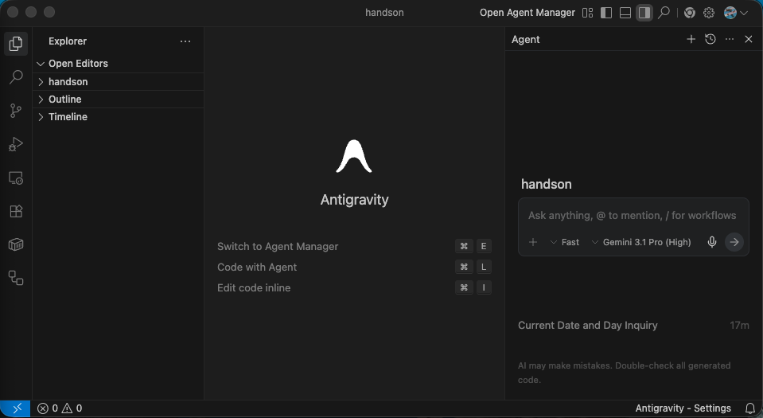
| 操作 | ショートカット |
|---|---|
| Editor ⇄ Agent Manager 切り替え | Cmd + E |
エディタの AI 機能
| 機能 | ショートカット | 説明 |
|---|---|---|
| Supercomplete | Tab |
複数行のコード提案を先読みして提示 |
| Tab-to-Jump | Tab |
次の編集場所に自動ジャンプ |
| Command | Cmd + I |
自然言語でコード変更を指示 |
6. モデル選択
Agent Manager の右上にあるモデル選択プルダウンから、タスクに応じて最適なモデルを切り替えられます。
基本は Gemini 3 Pro (High) を選んでおけば間違いありません。使いすぎて Rate Limit
に達した場合は別モデルに切り替えましょう。
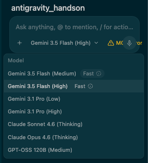
| モデル | 特徴 | おすすめ用途 |
|---|---|---|
| Gemini 3 Pro (High) | Google の最新フラッグシップモデル。コード生成・ロジック推論・複雑なタスク分解に最も優れる。ターミナル操作との連携精度も高い。 | メイン開発、複雑なロジック、要件定義・設計の壁打ち |
| Gemini 3 Pro (Low) | High と同じモデルだが計算リソースを抑えた設定。応答速度が若干速くなる場合がある。High が Rate Limit に達した際の代替としても有効。 | 比較的シンプルなコード修正、High の代替 |
| Gemini 3 Flash | 軽量・高速に特化したモデル。複雑な推論より「素早く答えを出す」ことを優先。レスポンスタイムが短いため、簡単な質問や確認作業に向いている。 | 簡単な質問応答、文言確認、素早いフィードバックが欲しいとき |
| Claude Sonnet 4.5 | Anthropic 製。文脈理解と自然な文章生成に強み。Standard モード（通常）と Thinking モード（深い推論）を切り替えられる。Google 製 IDE で他社モデルが使えるのは特筆すべき点。 | ドキュメント作成、要件定義書・READMEの執筆、長文の整理 |
| Claude Opus 4.5 | Anthropic の最高精度モデル。Thinking モードでは複雑な問題を段階的に深く推論する。消費リソースが大きい分、精度が求められる場面で真価を発揮する。 | 難易度の高いバグ解析、アーキテクチャ設計の深い検討 |
| Nano Banana Pro | 画像生成専用モデル。チャットで「〜な画像を生成して」と指示するとバックグラウンドで自動生成・保存してくれる。UIモックアップ・OGP・アイコンなどに活用できる。 | ヒーロー画像、アイコン、UIモックアップ、OGP画像の生成 |
- Gemini 3 Pro (High) → Gemini 3 Pro (Low) または Claude Sonnet 4.5 に切り替える
- しばらく時間をおいてから再試行する（通常数分〜数十分でリセット）
- 簡単な作業は Gemini 3 Flash で素早く処理する
7. セキュリティ設定（ターミナル自動実行ポリシー）

ターミナルコマンドとは、文字で入力してコンピュータに指示を出す命令のことです。
例：npm install（パッケージをインストール）、git commit（変更を記録）、rm -rf フォルダ名（フォルダを削除）など。
Antigravity では、AIが開発作業を進めるために、これらのコマンドを自動で実行することができます。
Antigravity は AI がターミナルコマンドを自動実行できます。「どこまで AI に任せるか」を Auto Execution ポリシーで制御します。
設定は Agent Manager の設定アイコン（⚙️）→ Auto Execution から変更できます。
| モード | 動作 | こんな時に使う |
|---|---|---|
| Off 最も安全 |
許可リスト（Allowlist）に登録したコマンドのみ実行。それ以外はすべて手動承認が必要。AIが勝手にコマンドを実行することは一切ない。 | 本番環境に近いリポジトリ、初めて使う場合、慎重に進めたいとき |
| Auto 推奨（バランス） |
AI の安全性モデルが各コマンドのリスクを自動判断。低リスクなコマンド（npm install・git status
など）は自動実行し、リスクが高いコマンド（ファイル削除・外部送信など）は確認を求める。 |
ハンズオン・個人開発・学習用プロジェクト。初心者はここから始めるのがおすすめ |
| Turbo 最速・要注意 |
すべてのコマンドを確認なしで即時実行。AI の判断にすべて委ねるため、開発スピードは最大になるが、意図しないファイル削除や変更のリスクも高まる。 | 手順が完全に確定した単純繰り返し作業、慣れたユーザーが速度を最優先にするとき |
今日のハンズオンでは Auto に設定しておくことを推奨します。
- AI が
npm installやgit statusなどの安全なコマンドを自動実行してくれるので作業がスムーズ - 危険なコマンド（ファイル削除など）は確認ダイアログが出るので誤操作を防げる
- 「何をやっているか見たい」場合は Off にして一つ一つ確認するのも学習になる
- 自動実行される例：
ls（ファイル一覧表示）、npm install（パッケージインストール）、git status（Git状態確認） - 確認が求められる例：
rm -rf フォルダ名（フォルダ削除）、git push --force（強制プッシュ） - 確認ダイアログが出たら、コマンドの内容を確認して「許可」または「拒否」を選択できます
🛠️ ターミナルでエラーが出たら
ターミナルに赤い文字でエラーメッセージが表示されても、慌てる必要はありません。以下の手順で対処できます：
- エラーメッセージをコピー： ターミナルのエラー部分をマウスで選択 →
Ctrl+C（またはCmd+C）でコピー - AIに貼り付けて相談： Antigravity のチャット欄に「このエラーが出ました：」とメッセージを入力し、その下にエラーメッセージを貼り付け
- AIが自動で解決： AIがエラーの原因を分析し、自動的に修正コマンドを実行してくれます
例：
このエラーが出ました：
Error: Cannot find module 'vite'
どうすればいいですか？
よくあるエラーと原因：
command not found→ 必要なツールがインストールされていない（AIに相談すればインストール方法を教えてくれます）EACCES: permission denied→ ファイルの権限エラー（AIが自動的に権限を修正してくれます）port already in use→ 既に開発サーバーが起動している（ターミナルでCtrl+Cを押して停止してから再実行）
やってみよう
こんにちは！今日の日付と曜日を教えて。日本語で日付と曜日が返ってくれば成功です。
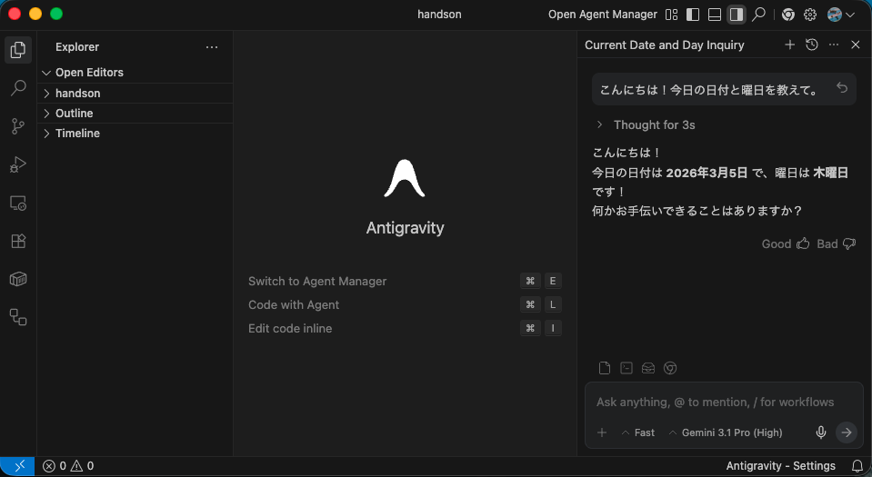
トラブルシューティング
| 問題 | 解決策 |
|---|---|
| ログインできない | VPN を切断 / ブラウザのキャッシュクリア |
| モデルが選択できない | Rate Limit の可能性。しばらく待つか別モデルへ切り替え |
| チャットが応答しない | ネットワーク確認 / Antigravity を再起動 |
| X86 Mac で起動しない | Apple Silicon (M1 以降) のみ対応 |
Step 1-2: Rules（GEMINI.md）設定
🕐 19:30〜19:45（Step1 合計 15分）目標
プロジェクト固有のルールをエージェントに教える設定ファイルを作成しましょう。
Rules とは
Rules は、エージェントの振る舞いを制御する持続的な指示です。簡単に言うと、「AIへの取扱説明書」のようなものです。「日本語で答えて」「コメントを入れて」などのルールを書いておくと、AIが毎回それに従って動きます。
📚 公式ドキュメント: https://antigravity.google/docs/rules-workflows
設定ファイルの種類
| ファイル名 | 説明 |
|---|---|
GEMINI.md |
プロジェクトルートに配置。もっとも一般的 |
AI_INSTRUCTIONS.md |
別名。機能は同じ |
ANTIGRAVITY.md |
別名。機能は同じ |
配置場所と適用範囲
| レベル | パス | 適用範囲 |
|---|---|---|
| グローバル | ~/.gemini/GEMINI.md |
すべてのプロジェクトに適用 |
| ワークスペース | .agent/rules/ フォルダ内 |
そのワークスペースのみ |
| プロジェクトルート | GEMINI.md |
そのプロジェクト全体 |
| サブディレクトリ | 各フォルダ内の GEMINI.md |
そのフォルダ以下のみ |
Activation Mode（発動条件）
| モード | 説明 | 例 |
|---|---|---|
| Always On | 常に有効（初心者はこれだけでOK） | コーディング規約、言語設定 |
| Manual | @ファイル名 で呼び出したときのみ有効 |
特定のレビュー基準 |
| Model Decision | AI が「必要そう」と判断したとき自動適用 | 関連性のあるルール |
| Glob | 特定のファイルパターンに一致したとき発動 | *.ts のときだけ適用 |
基本テンプレートの設定
- Editor View のファイルツリー（左側）で、一番上のフォルダ（プロジェクトルート）を右クリックします。
- New File を選択し、ファイル名を
GEMINI.mdにして Enter を押します。 - 作成されたファイルに以下のテンプレートをコピー＆ペーストして、保存（
Cmd + S）してください。
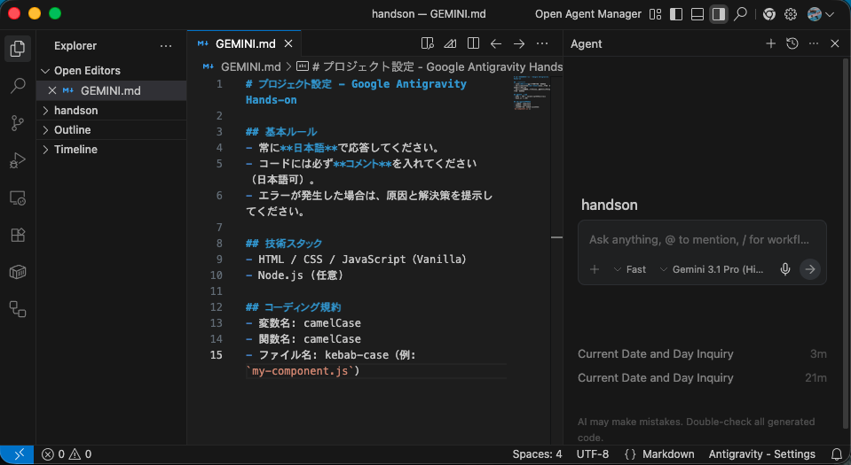
# プロジェクト設定 - Google Antigravity Hands-on
## 基本ルール
- 常に**日本語**で応答してください。
- コードには必ず**コメント**を入れてください（日本語可）。
- エラーが発生した場合は、原因と解決策を提示してください。
## 技術スタック
- HTML / CSS / JavaScript（Vanilla）
- Node.js (任意)
## コーディング規約
- 変数名: camelCase
- 関数名: camelCase
- ファイル名: kebab-case（例: `my-component.js`）動作確認
「Hello World」を表示する HTML ファイルを作成して。- 日本語で応答されているか
- コードにコメントが入っているか
- 変数名が camelCase になっているか
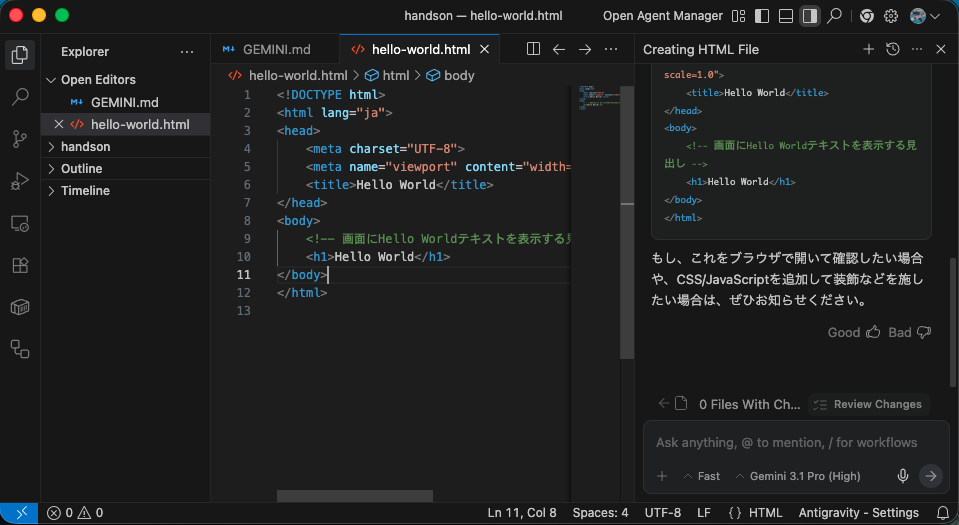
応用: Workflows を体験しよう（任意）
.agent/workflows/ フォルダに .md ファイルを作成し、チャットで /ワークフロー名 と入力して実行できます。
# .agent/workflows/hello.md
---
description: 挨拶のテスト用ワークフロー
---
1. ユーザーに「こんにちは！何をお手伝いしましょうか？」と挨拶する
2. 現在の日付と時刻を表示する
3. 現在のディレクトリ構造を簡単に説明する/helloStep 2: Vibe Coding 基礎編
🕐 19:45〜20:15（30分）
学習目標
- Antigravity との基本的な対話方法を身につける
- 自然言語でコードを生成する感覚をつかむ
- Nano Banana で画像を生成してみる
- すぐに動く Web ページを一つ作る
Vibe Coding のコツ
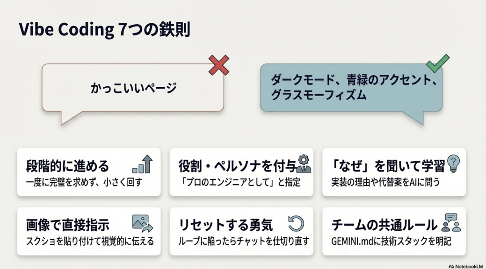
1. 具体的に伝える
❌ 「かっこいいページを作って」
✅ 「ダークモードで、青緑のアクセントカラー、グラスモーフィズムのカードデザインで作って」
💡 補足: AI は「かっこいい」「おしゃれ」などの曖昧な言葉より、色・レイアウト・デザインスタイルを具体的に指定するほど期待通りの結果になりやすい。 参考になるWebサイトのURLを貼って「このデザインに似た感じで」と伝えるのも効果的。
2. 段階的に進める
❌ 「完璧なポートフォリオサイトを作って」
✅ 「まずシンプルな自己紹介ページを作って」→「次にスキルセクションを追加して」
💡 補足: 一度に多くを求めると、AIが間違った方向に進んでしまい修正が大変になる。 「まず〇〇だけ作って」→ 確認 → 「次に〇〇を追加して」 という小さいサイクルを繰り返すのが鉄則。 Planning Mode で計画書（implementation_plan.md）を確認してから「Proceed」を押す習慣をつけよう。
3. フィードバックを活用する
「もう少し余白を増やして」「フォントサイズを大きくして」「元に戻して」💡 補足: ブラウザプレビューを見ながら、気になった点をそのまま言葉で伝えるだけで修正してくれる。 スクリーンショットをチャットに貼り付けて「ここの部分を〜」と指示するのが最も伝わりやすい。 「元に戻して」も有効で、AI は直前の変更を取り消してくれる。
4. 役割・ペルソナを与える
✅ 「あなたはプロのフロントエンドエンジニアです。ユーザー体験を最優先したコードを書いてください」
✅ 「Bootstrap ではなく Vanilla CSS で、保守しやすいコードにして」
💡 補足: AI に「どんな立場で考えてほしいか」を伝えると、回答の質が変わる。 技術スタックや制約条件（「外部ライブラリは使わない」「TypeScript で書く」など）も最初に伝えておくと、後から修正する手間が減る。 これは GEMINI.md に書いておくと毎回設定不要になる。
5. 「なぜ」を聞いて学習する
「このコードのどこを直したか、理由も含めて教えて」
「この実装方法にした理由は？他の選択肢は？」💡 補足: Vibe Coding はただコードを生成してもらうだけでなく、AIと対話しながら学ぶチャンスでもある。 「なぜこのライブラリを使った？」「別の書き方は？」と問いかけると、AI が複数の選択肢や理由を説明してくれる。 Artifacts に残る実装計画書（implementation_plan.md）も読み返すと理解が深まる。
6. うまくいかないときの切り替え方
「一旦リセットして、別のアプローチで試して」
「このエラーメッセージを見て。何が原因か教えて」💡 補足: AI が同じ修正を繰り返して解決しない場合は、新しいチャットを開いて仕切り直すのが最善策。 エラーが出たらターミナルのエラーメッセージをそのままコピーして貼り付けるだけでOK。 「なぜこのエラーになる？」と原因を聞いてから「直して」と指示する二段階アプローチが効果的。
7. チームで使うときのコツ（ハッカソン特有）
✅ 一人が Antigravity を操作し、残りのメンバーは画面を見てフィードバックを出す「モブプログラミング」形式
✅ GEMINI.md にチームの共通ルール（技術スタック・ファイル命名規則など）を書いておく
💡 補足: ハッカソンでは「全員でAIの計画書を確認 → 合意してから実行」のフローが大事。 AIが生成した implementation_plan.md をチーム全員で読んで認識を合わせると、後でのやり直しが減る。 コードベースが大きくなっても GEMINI.md のルールがあれば AI のコードスタイルが一貫する。
Part 1: シンプルな HTML ページを作成（5分）
新しいフォルダ「my-first-vibe」を作成して、その中にシンプルなHTMLファイルを作って。
テーマは「自己紹介ページ」で、モダンでおしゃれなデザインにして。作成したHTMLファイルをブラウザでプレビューしてAIに「ブラウザでプレビューして」と依頼すると、AIが自動的に以下を実行してくれます：
- HTMLファイルをデフォルトのブラウザ（Chrome、Safariなど）で開く
- または、開発サーバーを起動して
http://localhost:ポート番号で表示 - Antigravityが自動的にターミナルコマンドを実行してくれるので、あなたは何もする必要がありません
ブラウザウィンドウが自動的に開き、作成したページが表示されます。
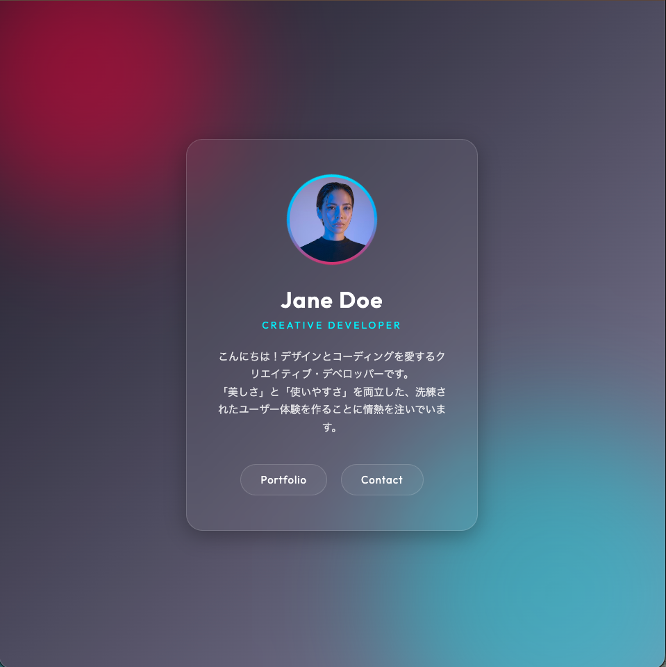
Part 2: デザインをカスタマイズ（10分）
背景色をダークモードに変更して。
アクセントカラーは青緑系（#4ecca3）にして。名前の部分にふわっと表示されるアニメーションを追加してスマホでも綺麗に見えるようにレスポンシブ対応してPart 3: Nano Banana で画像生成（15分）
Nano Bananaで、プロフィール用のアバター画像を生成して。
- スタイル: アニメ風またはイラスト風
- 背景: シンプルなグラデーション
- サイズ: 正方形
ファイル名は「avatar.png」で保存して。Nano Bananaで、ヘッダー用の背景画像を生成して。
- テーマ: 抽象的な波模様
- 色: 紺から青緑へのグラデーション
- 幅広い横長画像
ファイル名は「header-bg.png」で保存して。生成したavatar.pngとheader-bg.pngを自己紹介ページに配置して。
- avatar.pngは丸くトリミングしてプロフィール欄に
- header-bg.pngはヘッダーの背景に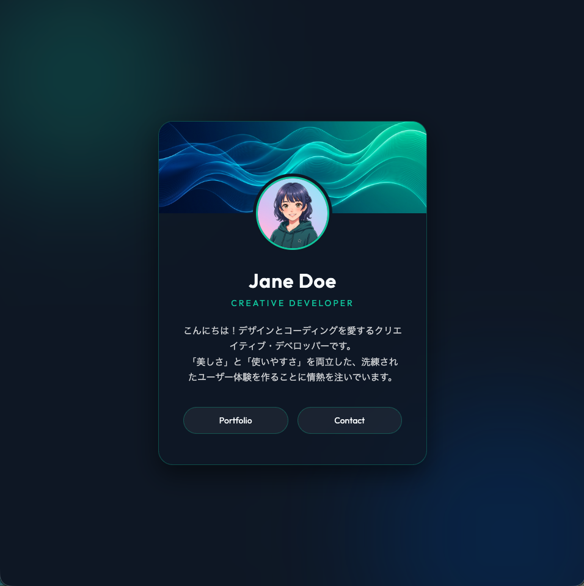
Step 3-1: MCP（Model Context Protocol）接続
🕐 20:15〜20:35（Step3 合計 20分）目標
MCP を使って、エージェントを外部ツールやデータソースにつなぐ方法を学びましょう。
MCP とは
MCP（Model Context Protocol）は、AIエージェントと外部システムを安全に接続するためのオープン標準です。簡単に言うと、「AIエージェント用のプラグイン」のようなものです。
📚 公式ドキュメント: https://antigravity.google/docs/mcp
MCP でできること
| 機能 | 説明 | 例 |
|---|---|---|
| Context Resources | AI がリアルタイムデータを読み取る | SQL スキーマ、ビルドログ |
| Custom Tools | AI がアクションを実行する | GitHub Issue 作成、Notion 検索 |
| MCP Store | GUI で MCP を追加・管理する | ワンクリックで有効化 |
利用可能な MCP サーバー
| MCP サーバー | 用途 | 設定方法 |
|---|---|---|
filesystem |
ローカルファイルの読み書き | デフォルト有効 |
chrome-devtools |
Chrome ブラウザ操作・DevTools | MCP Store から追加 |
playwright |
ブラウザ自動化・テスト | MCP Store から追加 |
browser |
Web ブラウザ操作・ドキュメント参照 | MCP Store から追加 |
serena |
大規模コードベース解析 | 設定ファイルで追加（後述） |
github |
GitHub API 連携 | MCP Store から追加 |
ハンズオン: serena を設定ファイルで追加する
MCP サーバーは GUI の MCP Store から追加する方法と、設定ファイルを直接編集する方法の2つがあります。ここでは、大規模コードベース解析に使える serena MCP
を例に、設定ファイルでの追加方法を学びます。
設定ファイルの場所
Antigravity の MCP 設定ファイルは .gemini/antigravity/mcp_config.json に配置されています。
設定手順
- Agent パネル右上の
...（三点メニュー）をクリック - Manage MCP Servers を選択
- メインタブの View raw config をクリック
- 以下の設定を
mcpServersセクションに追加：{ "mcpServers": { "serena": { "command": "uvx", "args": [ "--from", "git+https://github.com/oraios/serena", "serena", "start-mcp-server", "--context", "ide" ] } } } - 設定を保存して Antigravity を再起動
- プロジェクトを開いた後、エージェントに「Activate the current project using serena's activation tool」と依頼して serena を有効化
💡 ヒント: 簡単に試したい場合は、MCP Store からワンクリックでインストールすることもできます。設定ファイルでの追加は、バージョン管理や複数環境での一貫した設定に便利です。
やってみよう
以下の演習を通して、AI が外部ツールを自律的に使いこなす様子を体験してみましょう。上記の手順で
serena MCP を設定しておきます。
演習: コードベース分析
💡 ここでの MCP の役割: serena MCP
は、大規模なコードベースを意味的に解析し、特定の機能やパターンを見つけ出すツールです。AI が自律的にプロジェクト全体をスキャンし、関連するコードを発見・分析してくれます。通常の grep
や検索では見つけにくい、意味的に関連するコードも見つけられます。
serena を使って、このプロジェクト内で useState フックを使っているコンポーネントを全て見つけて、それぞれどのような状態を管理しているか分析して教えて。
⚠️ セキュリティ上の注意 — 野良 MCP に気をつけよう
🚨 MCP サーバーはインターネット上に誰でも公開できます。 出所不明の「野良 MCP」を安易に導入するのは非常に危険です。MCP はエージェントに強力な権限を与えるため、悪意あるサーバーを追加すると深刻な被害を受ける可能性があります。
| リスク | 具体例 |
|---|---|
| プロンプトインジェクション | MCP サーバーが返すデータに悪意のある命令が埋め込まれ、AIが意図しない操作を実行する |
| 機密情報の流出 | API キーやファイルの中身を外部サーバーに送信される |
| ファイルの改ざん・削除 | AI がファイルシステムへのアクセス権を持つため、プロジェクトのコードを破壊される |
✅ 安全な MCP の見分け方
- 公式 MCP Store からインストールする — Antigravity が審査・掲載したサーバーを優先して使う
- ソースコードが公開されているものを選ぶ — GitHub 等でコードが確認できる著名なプロジェクトが安心
- インストール前に用途・権限を確認する — 「なぜそのアクセス権限が必要なのか」が明示されているものを選ぶ
- 不要な MCP は無効化（Disable）する — 使わないサーバーは常時有効にしない
- API キーは環境変数で管理し、設定ファイルへの直書きは絶対に避けましょう
- ハンズオン後も、追加した MCP の権限設定を定期的に見直す習慣をつけましょう
Step 3-2: Agent Skills の作成
🕐 20:15〜20:35（Step3 合計 20分）目標
カスタム Skill を作り、エージェントに新しい能力を追加しましょう。
Agent Skills とは
Skills は、特定のタスクを実行する手順をパッケージ化してエージェントに教える機能です。簡単に言うと、「AIに新しい『技能』を教える機能」です。

📚 公式ドキュメント: https://antigravity.google/docs/skills
Skills / Rules / Workflows の比較
| 機能 | 目的 | 発動方法 |
|---|---|---|
| Rules | エージェントの振る舞いを制御する | 自動、または @ファイル名 |
| Workflows | 定型タスクを自動化する | /ワークフロー名 |
| Skills | 専門的な能力を追加する | @スキル名、または AI が自動判断 |
Skills の構造
.agent/skills/<skill-name>/
└── SKILL.md # スキルの定義（必須）SKILL.md のフォーマット
---
name: my-skill
description: 特定のタスクを支援するスキル
---
# スキルの説明
## 実行手順
1. ステップ 1
2. ステップ 2
...このフォルダに入っているサンプル Skill
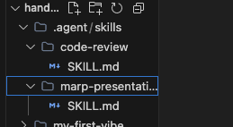
.agent/
└── skills/
├── code-review/
│ └── SKILL.md # コードレビュー用 Skill
└── marp-presentation/
└── SKILL.md # Marp プレゼン作成 Skillやってみよう: サンプルコードをレビュー
sample.js を code-review Skill でレビューして🌟 公開されている Skills を活用しよう
自分で一から作らなくても、すでに公開されている強力な Skill 集を活用できます。 このハンズオンで使っている Skills は、@suna_gaku（X）さんによってまとめられた Skill コレクションを参考にしています。
公開 Skills の追加方法
方法1: AI に依頼する（初心者におすすめ）
Antigravity のチャット欄で、AI に自然言語で依頼するだけで Skills を追加できます：
GitHub の https://github.com/USERNAME/skills-collection から
multi-ai-review と agent-team の Skill をダウンロードして
.agent/skills/ に配置してAIが自動的にダウンロード、配置まで行ってくれるので、ターミナル操作に不慣れな方はこの方法が最も簡単です。
方法2: ターミナルで手動追加（詳細手順）
より詳しく理解したい方は、以下の手順でターミナルから手動で追加できます：
- Antigravity でターミナルを開く：
Terminalメニュー →New Terminal - プロジェクトフォルダにいることを確認： ターミナルに現在のパスが表示されます。
antigravity-handsonフォルダ内にいることを確認してください。 - Skills リポジトリをクローン： 以下のコマンドをコピーして貼り付け、Enter で実行
git clone https://github.com/USERNAME/skills-collection.git- Skills をコピー： 以下のコマンドを1行ずつ実行します（
#で始まる行はコメントなので入力不要）
# multi-ai-review Skill をコピー
cp -r skills-collection/multi-ai-review .agent/skills/
# agent-team Skill をコピー
cp -r skills-collection/agent-team .agent/skills/git clone: GitHubからファイルをダウンロードcp -r: フォルダごとコピー（-rは「再帰的に=中身も全部」の意味）.agent/skills/: コピー先のフォルダ（.は「現在のフォルダ」を指す）
- 左側のファイルツリーで
.agent/skills/を開く multi-ai-reviewやagent-teamフォルダが表示されていればOK- 各フォルダ内に
SKILL.mdファイルがあることを確認
有用な Skill の例
以下は公開されている有用な Skills の例です。これらを .agent/skills/ に追加することで利用できます：
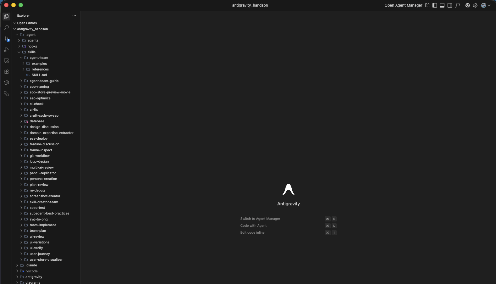
| Skill 名 | 概要 |
|---|---|
@multi-ai-review |
Codex, Gemini, Claude の3つに並列コードレビューを依頼し統合レポートを生成 |
@agent-team |
複数のサブエージェントをオーケストレーションし並列実行 |
@git-workflow |
ブランチ作成・コミット・PR 作成の Git ワークフローを自動化 |
@ci-check |
GitHub Actions の CI チェックをローカル実行して自動修正 |
@ui-verify |
Chrome DevTools でフロントエンドの動作確認とデバッグを実行 |
Step 4: Vibe Coding 発展編
🕐 20:35〜21:05（30分）学習目標
- MCP を活用した Web リサーチの実践
- Agent Skills を使った自動化フロー
- 本格的な Web アプリケーション（AI Coffee Shop LP）の作成
基礎編との違い
| 項目 | Step 2（基礎編） | Step 4（発展編） |
|---|---|---|
| MCP | なし | Browser, Filesystem を使用 |
| Skills | なし | カスタム Skill を使用 |
| リサーチ | なし | 自動 Web リサーチ |
| 複雑さ | 単一ページ | 複数ページ + API 連携 |
Tips: アーティファクト（成果物ドキュメント）を活用する
AntigravityのAIエージェントは、チャットの返答とは別に独立したドキュメント（アーティファクト）を作成する機能があります。特に複雑な要件や中規模以上の開発を行う際は、いきなりコードを書かせるのではなく、まず以下のようなアーティファクトを作成するように指示することで、開発を整理しながら安全かつスムーズに進めることができます。
| アーティファクト | 説明 |
|---|---|
| Implementation Plan | どう実装するかの全体設計 |
| Task Lists | 具体的な作業ステップ |
| Code Diffs | 実際に変更されるコードのプレビュー |
| Walkthrough | タスク完了後の変更概要とテスト方法 |
Tips: Web ブラウザを操作する（標準機能）
Antigravity では、特別な拡張機能をインストールしなくても、デフォルトで外部の Web サイトを検索・閲覧したり、ブラウザの画面を操作する機能が備わっています。AI は最新の公式ドキュメントやネット上の情報を自律的に検索したり、開発中のアプリをブラウザで開いて自律的にテストを行ってくれます。
💡 どういう時に便利？:
- 最新情報の検索: エラーの解決策を調べたい時や、最新の技術バージョンについて知りたい時など、AI の事前学習データに含まれていない「リアルタイムな情報」が必要な場面
- 動作確認・操作の自動化: 「ローカルサーバーを起ち上げてブラウザで開き、ボタンをクリックして意図通り動くかテストして」のように、実際のブラウザ操作を自動実行させたい場面
やってみよう
Google で「Antigravity IDE 2026」を検索して、
トップ3件の記事タイトルを教えて。ハンズオン: AI Coffee Shop LP を作ろう
このハンズオンでは、架空の「AI カフェ」のランディングページ（LP）を作成します。MCP × Skills × Nano Banana を総動員して、本格的な Web アプリケーションを約30分で完成させる体験ができます。
- MCP Browser で競合サイトを自動リサーチ
- Nano Banana でプロ品質のビジュアル生成
- React + TailwindCSS で本格的なフロントエンド開発
- Agent Skills で自動コードレビュー＆修正
- 従来なら数日かかる作業を約30分で完結
各 Part のプロンプトを参考に、自分の好きなテーマでオリジナルな LP を作ってみましょう！
（例：ペットショップ、音楽スタジオ、ヨガスタジオ、ゲーム紹介サイトなど）
以下のサンプルプロンプトをコピー＆ペーストしてそのまま試してみましょう。
AI がどんな作業をしてくれるのか体験することが大切です。慣れてきたら自分でアレンジしてみてください。
全体の流れ
Step 1: Web リサーチ（MCP 活用）
↓
Step 2: 競合分析 → 構成決定
↓
Step 3: ビジュアル生成（Nano Banana）
↓
Step 4: 実装（Skills 活用）
↓
Step 5: 品質チェック（code-review Skill）
↓
Step 6: デプロイPart 1: Web リサーチ（MCP Browser）— 所要時間: 5分
目的： 実在する競合サイトから最新のデザイントレンドを自動収集し、LP の品質を高めるための参考情報を得ます。
やること： Browser を使って Google 検索を実行し、上位サイトのデザイン要素（色使い・レイアウト・CTA ボタン・画像）を AI が自動分析します。
Browserを使って、「おしゃれなカフェ ランディングページ」で検索して、
上位5サイトのデザインの特徴を分析して。
特に以下の点をまとめて：
- 色使い
- レイアウト
- CTAボタンのデザイン
- 画像の使い方Part 2: 構成決定 — 所要時間: 5分
目的： リサーチ結果とターゲット要件を組み合わせて、最適な LP 構成を設計します。
やること： AI に「ターゲット層」「ブランドイメージ」「目標行動（ゴール）」を伝えると、セクション構成とキャッチコピーを自動生成してくれます。
リサーチ結果を踏まえて、このLPに必要なセクション構成を提案して。
要件:
- ターゲット: 20-30代のコーヒー好き
- ブランドイメージ: 近未来的 × 温かみ
- ゴール: 来店予約
各セクションのキャッチコピーも考えて。Part 3: ビジュアル生成（Nano Banana）— 所要時間: 3分
目的： LP のメインビジュアル（ヒーロー画像）を AI で生成し、デザイン品質を一気に引き上げます。
やること： Nano Banana に「近未来的なカフェ」のイメージを指示すると、プロ品質のフォトリアリスティックな画像を生成してプロジェクトに配置してくれます。
Nano Banana で、「近未来的なカフェの店内、
ネオンブルーとウォームライト、観葉植物、4K、フォトリアリスティック」
のイメージを生成して。ファイル名は hero-bg.webp で保存して。Part 4: 実装（React + TailwindCSS）— 所要時間: 10分
目的： Part 2 で決めた構成と Part 3 で生成した画像を使い、本格的な React アプリとして実装します。
やること： AI に「Vite + React + TailwindCSS で構築して」と依頼すると、プロジェクトのセットアップからコンポーネント実装まで全自動で行われます。
04_vibe_coding_advanced フォルダに、
Vite + React + TailwindCSS のプロジェクトを作成して。
プロジェクト名は「ai-coffee-shop」開発サーバーを起動してブラウザでプレビューして
開発サーバーは、Webアプリをローカル環境で動かすための小さなサーバーです。
AIに「開発サーバーを起動して」と依頼すると、AIが自動的に以下を実行します：
- ターミナルで
npm run devなどのコマンドを実行 - サーバーが起動し、
http://localhost:5173のようなアドレスでアクセス可能になる - ブラウザが自動で開き、作成したアプリが表示される
- コードを変更すると、ブラウザが自動的に更新される（ホットリロード）
初心者の方へ：ターミナルに「Server running at
http://localhost:5173」のような表示が出ていれば成功です。サーバーを止めたいときは、ターミナルで Ctrl+C を押します。
Part 5: 品質チェック（Skills活用）— 所要時間: 5分
目的： 実装したコードの品質を自動レビューし、バグやアンチパターンを事前に発見・修正します。
やること： @code-review Skill を呼び出すと、AI が全コンポーネントをレビューし、改善すべき点を自動的に修正してくれます。
@code-review ai-coffee-shop/src/components/ のすべてのコンポーネントを
レビューして、改善点があれば自動的に修正して。Part 6: デプロイ — 所要時間: 2〜10分
目的： 完成した LP を本番環境にデプロイし、実際に公開できる状態にします。
このパートでは Firebase Hosting を使用します。初めて使う方は事前設定が必要です。
時間がない場合や難しい場合は、このパートをスキップして「Part 5 までの体験」でも十分です。
デプロイ前の準備（初めての方のみ）
Antigravity に以下のように依頼すれば、AI が必要な手順を案内してくれます：
Firebase Hosting を初めて使います。
プロジェクト作成からデプロイまでの手順を教えてください。以下の手順で進めてください：
ステップ1: Firebase プロジェクトの作成
- Firebase Console にアクセス（Google アカウントでログイン）
- 「プロジェクトを追加」をクリック
- プロジェクト名を入力（例：
ai-coffee-shop） - Google アナリティクスは「今は設定しない」でOK
- 「プロジェクトを作成」をクリックして完了を待つ
ステップ2: Firebase CLI のインストールとログイン
初心者の方へ：ターミナル操作が不安な場合は、以下のコマンドを Antigravity のチャットにコピペして「実行して」と依頼すれば、AI が代わりに実行してくれます。
# Firebase CLI をインストール（初回のみ）
npm install -g firebase-tools
# Firebase にログイン
firebase loginfirebase loginを実行すると、ブラウザが開いて Google アカウントでログインを求められます- 「Firebase CLI がアクセスをリクエスト」と表示されたら「許可」をクリック
- ターミナルに「Success! Logged in as your-email@gmail.com」と表示されれば成功
デプロイの実行
やること： AI に「Firebase Hosting にデプロイ準備」と依頼すると、プロダクションビルド実行から設定ファイル作成まで自動化されます。
プロダクションビルドを実行して、
Firebase Hosting にデプロイする準備をして。- プロダクションビルド（
npm run build） - Firebase 設定ファイル（
firebase.json）の作成 - デプロイコマンド（
firebase deploy）の実行
デプロイが成功すると、ターミナルに以下のような URL が表示されます：
Hosting URL: https://your-project.web.app
この URL をブラウザで開けば、世界中からアクセスできる本番環境の LP が表示されます！
これで、リサーチ → 企画 → デザイン → 実装 → レビュー → デプロイ という本格的な Web 開発フローを約30分で体験できました。
従来の開発手法では数日〜1週間かかる作業を、Antigravity + MCP + Skills の組み合わせで大幅に短縮できることを実感していただけたと思います。
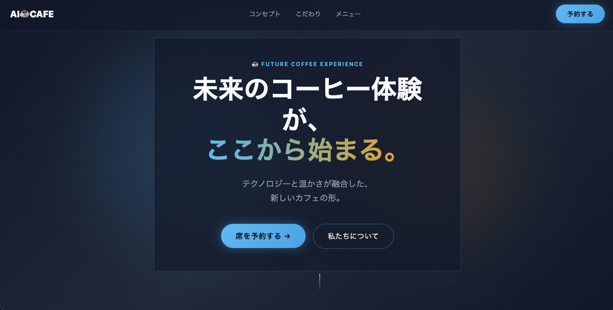
開発時間の比較
| 項目 | 従来の開発 | 基礎編 | 発展編 |
|---|---|---|---|
| リサーチ | 2時間 | — | 10分 |
| デザイン | 4時間 | 20分 | 15分 |
| 実装 | 8時間 | 30分 | 20分 |
| レビュー | 2時間 | — | 5分 |
| 合計 | 16時間 | 50分 | 50分 |
Step 5: ハッカソンおすすめ戦略 AI-DLC
🕐 21:05〜21:20（15分）この章の目標
- AI-DLC という開発手法の考え方を理解する
- ハッカソンの限られた時間でどう動けば良いかのイメージを持つ
- チーム開発×AI の進め方を知る
AI-DLC（AI駆動開発ライフサイクル）とは
AI-DLC は、AIを単なるコーディング補助ツール（Copilot）としてではなく、開発プロセス全体の中心的な協力者として再構築する新しい開発手法です。
| 従来の AI 支援型開発 | AI-DLC | |
|---|---|---|
| 誰が主導？ | 人間が主導し、AIに指示 | AI がワークフローを主導、人間は承認・方向修正に集中 |
| AI の役割 | コーディングの部分的なお手伝い | 要件定義〜デプロイまでプロセス全体の協力者 |
| たとえるなら | 道具として使う（ドリルを持つ人） | チームメイトとして一緒に走る（リレーの相方） |
AI-DLC の3つのフェーズ
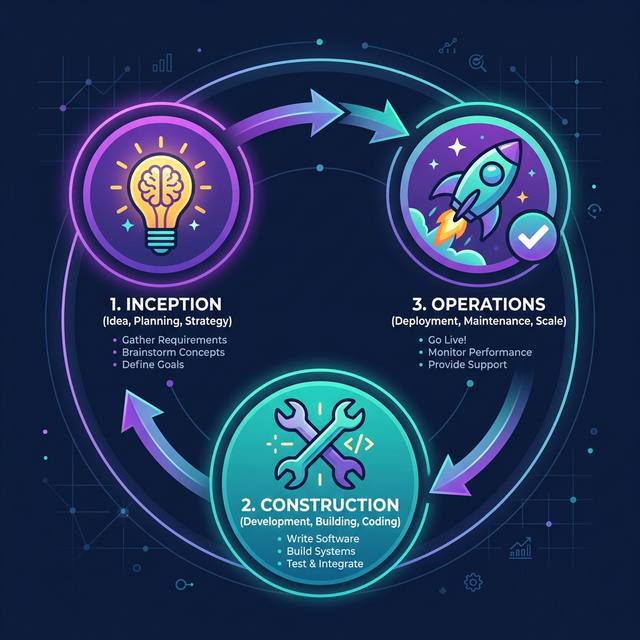
1. Inception（発案）
「こんなアプリ作りたい」というざっくりしたアイデアを AI に伝える。AI が要件・ユーザーストーリーを自動生成。チームでリアルタイムで修正。
2. Construction（構築）
Inception で決めた要件に基づいて AI がコード・テスト・設計を一気に提案。人間は技術的な判断（フレームワーク選定、デザイン方針）に集中。
3. Operations（運用）
AI がデプロイの準備を整える。動作確認・テスト・バグ修正もAIがサポート。改善フィードバックを次の Inception に循環させる。
ハッカソン最強戦略: モブ開発 × AI
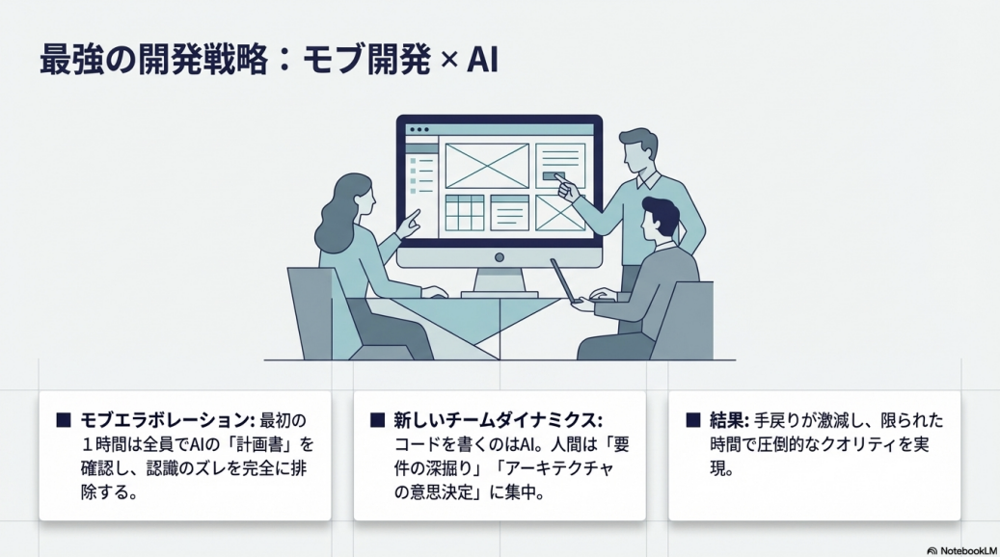
ハッカソンで最も時間を無駄にするのは、「メンバー間の認識のズレ」による手戻りです。
💡 モブプログラミング（モブ開発）とは？
本来は全員が1つの画面を見ながら一緒にプログラミングする手法ですが、AI-DLCにおいては、実装自体はAIに任せ、人間はチーム全員で画面を見ながら「要件定義」や「アーキテクチャの意思決定」に集中するスタイルになります。認識のズレがなくなり、結果的に手戻りが激減します。
| フェーズ | やること |
|---|---|
| Inception | AI が出した要件・計画をチーム全員で確認・修正。全員が同じゴールを共有できる |
| Construction | AI がコードを書き、チーム全員で技術的な判断をその場で議論 |
Antigravity でのやり方
- 1人が Antigravity を画面共有（Zoom / Discord）
- チーム全員で Agent Manager の画面を見ながら要件定義を進める
- AI が出力した「計画書」を全員で確認 → 「ここは違う」とチャットで修正指示
- 計画が固まったら「Proceed（実行）」→ AI がコードを生成
- 生成されたコードをみんなで確認しながら方向修正
🔥 ハッカソンの最初の1時間を「モブエラボレーション」に使うだけで、成果物の品質と開発スピードが劇的に変わります！
※ モブエラボレーション：チーム全員で一斉に要件やアイデアを深掘り・整理（Elaboration）し、詳細な設計書（アーティファクト）へと落とし込む作業のこと。
Antigravity と AI-DLC の対応関係
| AI-DLC フェーズ | やること | Antigravity の対応機能 |
|---|---|---|
| Inception（発案） | アイデア → 要件 → 計画 | Agent Manager でタスク分解・計画書自動生成 |
| Construction（構築） | コード・デザイン・テスト | Vibe Coding + MCP + Nano Banana |
| Operations（運用） | デプロイ・動作確認 | Browser Subagent で自動テスト・画面確認 |
まとめ: チームで納得できる作品に仕上げるための3つのルール
- 最初にモブエラボレーションする — 全員でAIの出した計画を見て合意を取る
- コードは AI に任せ、人間は判断に集中する — フレームワーク選定、デザイン方針、審査基準への対応
- デモの見栄えを重視する — Nano Banana で画像生成、Browser Subagent で最終確認
Step 6: 活用 Tips 集
Antigravity をさらに使いこなすための参考記事・公式リソースをまとめました。ハンズオン後の自習や、チームへの共有にご活用ください。
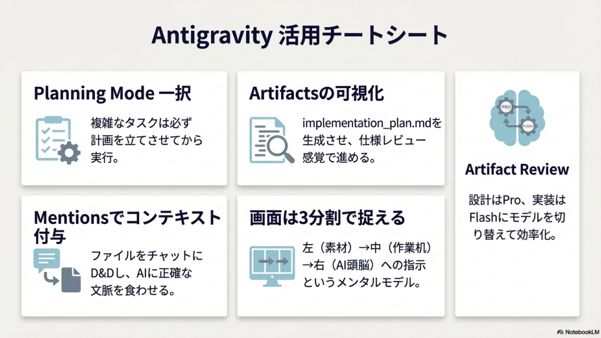
📰 活用 Tips
| Tips | 概要 | 出典 URL |
|---|---|---|
| 画面は「3分割」で理解する | 左：Workspace（ファイル置き場）、中：Editor（作業机）、右：AI Chat（頭脳）の3エリア構成。「右のAIに指示して、左の素材を使い、中央で作業させる」と覚えるとシンプル。チャット履歴は右上の「＋」で新規、「時計マーク」で過去ログを参照できる。 | note.com/ kino_11 |
| モードは基本「Planning」一択 | Planning Mode ではAIがまず計画を立て、宣言してから作業する。Fast Mode は計画なしで即作業するためミスりやすい。複雑なタスクは急がば回れで Planning
を選ぶほうが精度が上がる。モデルは Gemini 3 Pro（High） が安定。 |
|
| Global Rules に「日本語指示」を書く | 設定しないとAIが英語で返答することがある。Global Rules に 回答、計画、思考プロセスを全て日本語で行うこと。
の一行を書くだけで日本語対応になる。これが最初にやるべき「憲法」設定。 |
|
| Mentions でファイルを「食わせる」 | チャット欄にファイルをドラッグ＆ドロップするか @ファイル名 で参照することで、AIに正確なコンテキストを与えられる。指示の精度が大きく向上する。 |
|
| Auto Execution の使い分け | 設計を壁打ちしたいときは Request Review（AIが毎回確認を求める）、単純作業を任せるときは
Always Proceed（確認なしで爆速）に切り替える。慣れるまでは Request Review が安全。
|
|
| Artifacts でAIの作業を「見える化」 | タスク実行時に
task.md（進行状況）・implementation_plan.md（実装計画）・walkthrough.md（作業ログ）が自動生成される。コードを書く前に計画書が出るため「仕様レビュー」感覚で開発できる。
|
zenn.dev/ minedia |
| Chrome拡張でクロスツール自律操作 | Antigravity 専用の Chrome 拡張を入れると、AIがブラウザを実際に見て操作できるようになる。ターミナル実行→ブラウザ動作確認まで全自動。UIの実装精度が段違いに向上する。 | |
| スクショに直接コメントで指示する | 生成されたUIのスクリーンショットや画像に対して、ドラッグ＆ドロップで範囲選択してコメントを入れるだけで修正指示が出せる。「右上のボタンを…」とテキストで説明するストレスから解放される。 | |
| Nano Banana Pro で画像を即生成 | UIモックアップ・アーキテクチャ図・Webサイト用の画像アセットなどをAIが生成して直接プロジェクトに配置してくれる。デザイナーを待たずとも高品質な素材が数秒で手に入る。 | |
| Artifact Review で実行前にモデル切り替え | Artifact Review Policy を「Request Review」に設定すると、AIが実装計画を提示した段階でレビューできる。ここで実行前にモデルを切り替えられるのが最大のメリット。設計フェーズは Gemini 3 Pro（High）、実装フェーズは Low に切り替えると、素早いトライアンドエラーが可能になる。 | DevelopersIO
/ G-gen Blog / Zenn |
| DevContainer で安全に実行 | Antigravity は DevContainer
対応が組み込み。ホストOSを保護するため、独立した環境内で実行することでリスク軽減できる。.gitconfig
などの設定ファイルはホストからマウントして引き継ぐ。 |
|
| Step10 超過時に一時停止させる | ~/.gemini/GEMINI.md
に「Step10超過時に処理を一時停止して、完了内容・状況報告・次アクションを報告すること」と書くことで、根本原因分析を促進し、無限ループを防げる。日本語対応設定も同じファイルに記述できる。
|
|
| Agent Manager で並列実行 | cmd + E で Agent Manager を開くと、複数エージェントを同時管理できる。Asynchronous Agents
機能で複数タスクを並行実行すると、フロントエンド実装とバックエンド構築を同時進行させられる。 |
|
| 無料枠のレート制限に注意 | プレビュー版では無料枠のレート制限が厳しく、数時間で上限に達する可能性がある。制限に達したら別モデルへ切り替え（Claude Sonnet 4.5 は無料で利用可能）、またはエラー発生時は「続きを実装して」と依頼すると再開される。 | |
| Review-driven development を活用 | ターミナル実行ポリシーを「Request Review」、変更の適用は「Agent Decides」に設定すると、コマンド実行時に確認を挟みつつ、AIが状況に応じて自動判断できる。要所で人間の確認を挟みながら作業を進められる。 | |
| Browser Agent でデバッグ自動化 | Browser Agent 拡張機能をインストールすると、エージェントに「ブラウザで確認するよう指示」するだけで、エラー画面を自動確認・デバッグ情報を収集できる。ターミナル実行→ブラウザ動作確認まで全自動になる。 | |
| Planning Mode は9割のケースで使う | Planning Mode は計画立案→実装の流れで進むため、エラーが出やすいクラウドインフラ構築・複雑な機能実装に最適。Fast Mode は単発の質問やテキスト修正向けで、継続的なタスク実行には不向き。迷ったら Planning を選ぶべし。 |
🔗 公式ドキュメント・リソース
| カテゴリ | 概要 | URL |
|---|---|---|
| 公式サイト | Antigravity のダウンロード・プラン・最新情報 | antigravity.google |
| 公式ドキュメント | セットアップ・Rules・MCP・Skills・Workflows の詳細リファレンス | antigravity.google/docs |
| Rules & Workflows | GEMINI.md の書き方・Activation Mode・Workflows の設定方法 | antigravity.google/docs/rules-workflows |
| MCP（Model Context Protocol） | 外部ツール連携（ブラウザ・DB・GitHub 等）の接続手順 | antigravity.google/docs/mcp |
| Agent Skills | スキルの作成・配置・呼び出し方法のリファレンス | antigravity.google/docs/skills |
おわりに
本日はご参加いただきありがとうございました！
Antigravity を使った AI 駆動開発の可能性を少しでも感じてもらえたなら嬉しいです。今後もイベントや学習コンテンツを通じて、一緒に「Vibe Coding」の世界を探求しましょう。
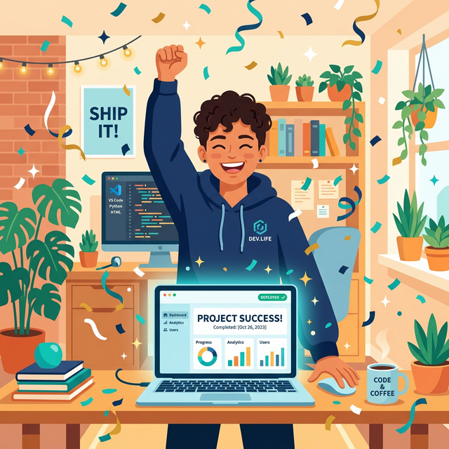
🎪 今後のイベント
「AI 駆動開発（AIDD）」をテーマに、各自が持ち寄った課題を AI と共に解決するもくもく会。プロンプトや知見をみんなで共有します。
社内外の技術勉強会や登壇情報を随時発信中。気になる方は X をフォローしてください！
📗 書籍のご紹介
開発系エンジニアのためのGit/GitHub絵とき入門
Git/GitHub の仕組みを「絵解き」でわかりやすく解説した入門書。チーム開発のフロー・ブランチ戦略・PR レビューまでカバーしています。エンジニア初心者から中級者まで必読！
🔗 学習リソース
📣 SNS でつながろう
感想・学び・気づきを X でシェアしていただけると嬉しいです celebration
下記ボタンをクリックすると、投稿フォームが開きます（内容は自由に編集できます）